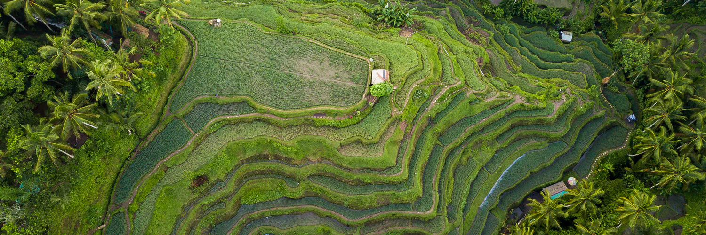
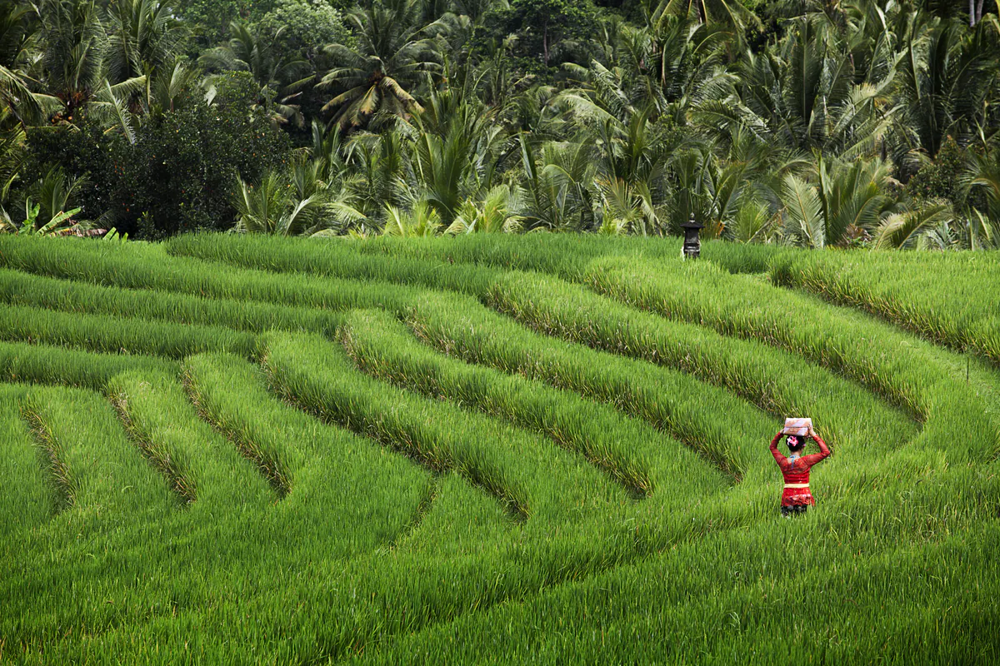
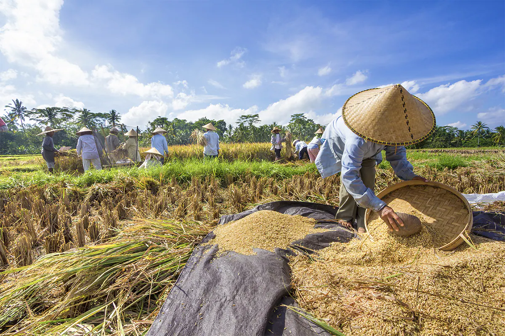
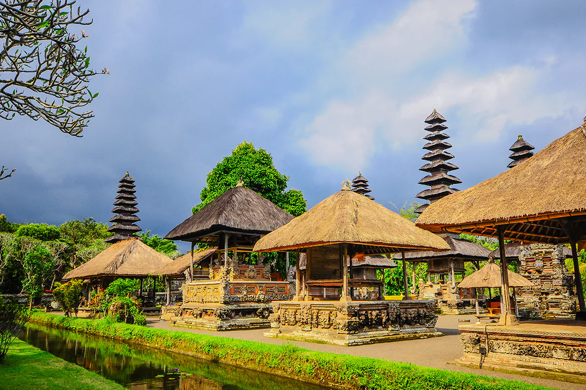

“Subak” – Bali’s Cultural Landscape

Visit Bali, travel to its highlands, and you can not but be amazed by the beauty of the thousands of hectares of lush
green paddy fields that cascade in terraces from the upper reaches of volcanoes down to the deep valleys below as if
sculpted from the mountainside.
Indeed, Bali is blessed with 150 rivers and streams that provide water year-round to irrigate this most important staple.
Nonetheless, irrigation of the ricefields would not be successful unless man also has a hand in it. Ancient inscriptions
recorded the digging of an irrigation tunnel back in the year 944 AD. The complex irrigation system is complemented by a
network of irrigation channels that distribute the waters to each and every paddy field.
Travel to Tegallalang some 15 km north of Ubud, or wander to the eastern slopes of imposing Mt. Agung at Amlapura by the
village of Abang, and stand in awe at the wonderful spectacle of rich green ricefields undulating over valleys and across
mountains.

Uniquely, Bali’s complex irrigation system has its roots not by order of kings, but its management is very much in the hands
of the villagers through village cooperatives, called “Subak”. Since farmers depend on the successful irrigation of the fields,
the different Subaks form an inseparable bond that unites into a single system. This unique system has been handed down the
generations for over a thousand years, whose results can be admired in the wonderful terraced ricefields of Bali.
At the lowest level, each farmer is a member of a subak, whose ricefields is fed from a single dam. The head of the Subak,
called the Klian Subak is elected by its members. In the larger subak that are fed by a canal, the lowest level is called
the tempek. The subaks, in turn are linked to mountain temples or pura masceti, which come under the sway of one of two lake temples,
these are the Pura Batu Kau which coordinates irrigation in West Bali, and Pura Ulun Danau which coordinates the north,
east and south of Bali.
Water temples hold festivals every 105 days, corresponding with the 105 days a rice-growing season in Bali. This cycle also
determines the time of opening and closing of canal sluises, ensuring that plantings are staggered and that water is allocated
in the most efficient and equitable manner.
However, every decision is always discussed at members’ meetings and unanimously agreed upon then carried down to each subak.
In turn, the subak then calls their members together so that each member can decide when to start planting. Farmers then
start planting in a consecutive manner after every 10 days.
(Indonesian Heritage: The Human Environment, Archipelago Press).
The Subak, of course, relates exclusively to irrigated ricefields, called “sawah”, other fields are rain-fed, and are known as tegalan.

In Indonesia, and especially on Java and Bali, Rice is not only a staple diet, but it stands synonymous with the word Food. No meal is
complete without rice. Rice is also an essential part of social and religious ceremonies, since Rice in essence forms the lifeblood
of the community.
The goddess of Rice is known as Bhatari Sri, or the mother of Rice. As the Indonesian archipelago’s staple food, Dewi Sri is not only
venerated in Bali, but also on Java and other rice-producing islands.
Combining sacred traditional values and a highly organized system, therefore, the Subak, the unique Balinese rice farming culture is a
manifestation of the Balinese Tri Hita Karana cosmological doctrine. It is the tangible reflection of the original Balinese
ideas and beliefs that are essentially rooted in this concept, namely the awareness that human beings need to always maintain harmonious
relationship between Man and God, Man and fellow humans, and between Man and Nature in one’s daily life. Such particular concept is in
fact evident in the Balinese creative genius and unique cultural traditions resulting from the long human interaction, especially
between the Balinese and the Hindu culture.

All the cluster sites of the Cultural Landscape also directly demonstrate the capability of the Balinese to make their unique cosmological
doctrines a reality, practiced in their daily life through spatial planning and land use (cultural landscape), settlement arrangements,
architecture, ceremonies and rituals, art, as well as social organization. Indeed the implementation of the concept has evidently
generated a beautiful cultural landscape.
For these reasons, UNESCO has designated the “Subak” – Bali’s Cultural Landscape – as World Heritage in St. Petersburg,
Russia on 20 June 2012.
(Source: Archipelago Press, Indonesia Heritage, the Human Environment, and Unesco)